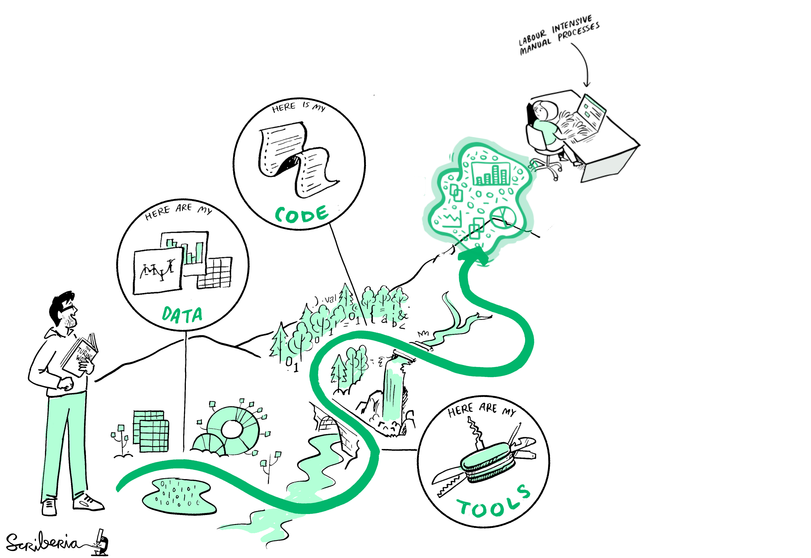

Data + Code + Software = PDF:
How to write a reproducible research article
Adina Wagner
 @AdinaKrik
@AdinaKrik |
|
|
Psychoinformatics lab,
Institute of Neuroscience and Medicine, Brain & Behavior (INM-7) Research Center Jülich ReproNim/INCF fellow |


|
Slides: DOI 10.5281/zenodo.5508797 (Scan the QR code)
Sources: github.com/adswa/talk-reproducible-research-articles
An article about computational science in a scientific publication is not the scholarship itself, it is merely advertising of the scholarship. The actual scholarship is the complete software development environment and the complete set of instructions which generated the figures.
Jon Claerbout (paraphrased)
Science is more than a PDF

Science is more than a PDF
Science is more than a PDF
Research ingredients

But what about the recipe?
Open Sharing may not be enough
- Hardwicke et al., 2018:
- Open data of 38% of N=174 studies were not "in principle reusable"
- 24 out of 35 studies with reusable data: irreproducible main results without assistance of the original authors,
- 13 out of 24: not exactly reproducible even with assistance
- Obels et al., 2020:
- N=62 Registered Reports
- 36 articles shared both data and code to reproduce results
- Out of those, main findings of 15 articles could not be reproduced
|
Data Management |
Technical problems environment |
Human errors |
Be kind to your future self, work reproducibly

A reproducible paper in the wild
You can find this recording on YouTube: https://www.youtube.com/watch?v=nhLqmF58SLQBuilding blocks of the publication
Disclaimer: This is not the only way to write a reproducible paper!- Original reproducible paper: https://github.com/psychoinformatics-de/paper-remodnav
- Resulting publication: https://doi.org/10.3758/s13428-020-01428-x
- Step-by-Step instructions: handbook.datalad.org/usecases/reproducible-paper.html
- Tutorial: github.com/datalad-handbook/repro-paper-sketch
Specific workflow and software choices:
- Version control and data transport: Git & DataLad
- Workflow management: Make
- Software management: Virtual environments
- Dynamic document generation: LaTeX
Why: Version control and data transport?
- The building blocks of a scientific result are rarely static
| Analysis code evolves (Fix bugs, add functions, refactor, ...) |

|
Why: Version control and data transport?
- The building blocks of a scientific result are rarely static
| Data changes (errors are fixed, data is extended, naming standards change, an analysis requires only a subset of your data...) |

|
How it works: Version control and data transport
- DataLad (Halchenko et al): Open source, domain-agnostic data management & data publication tool, build on top of Git and Git-annex (Joey Hess)
- Main features used in this publication:
- version-controlling and linking arbitrarily large digital objects (data, software, code, results),
- transport mechanisms for sharing, obtaining & collaborating on data (analysis) using existing infrastructure without a central service

|
How it works: Version control and data transport
- DataLad (Halchenko et al): Open source, domain-agnostic data management & data publication tool, build on top of Git and Git-annex (Joey Hess)
- Main features used in this publication:
- version-controlling and linking arbitrarily large digital objects (data, software, code, results),
- transport mechanisms for sharing, obtaining & collaborating on data (analysis) using existing infrastructure without a central service

How it works: Version control and data transport
- DataLad (Halchenko et al): Open source, domain-agnostic data management & data publication tool, build on top of Git and Git-annex (Joey Hess)
- Main features used in this publication:
- version-controlling and linking arbitrarily large digital objects (data, software, code, results),
- transport mechanisms for sharing, obtaining & collaborating on data (analysis) using existing infrastructure without a central service
(remodnav) adina@muninn in ~/repos/papers/paper-remodnav on git:master
# How large is the repository after cloning?
$ du -sh # show disk usage in human readable sizes
16M
Let's take a look into how the script retrieves data:
Import datalad API
Get individual files
vim code/mk_figuresnstats.py
from datalad.api import get as datalad_get
[...]
infiles = [op.join('data', 'raw_eyegaze', 'sub-32', 'beh', 'sub-32_task-movie_run-5_recording-eyegaze_physio.tsv.gz'), [...]]
for f in infiles:
datalad get(f)
data = np.recfromcsv(f)
How it works: Version control and data transport
- DataLad (Halchenko et al): Open source, domain-agnostic data management & data publication tool, build on top of Git and Git-annex (Joey Hess)
- Main features used in this publication:
- version-controlling and linking arbitrarily large digital objects (data, software, code, results),
- transport mechanisms for sharing, obtaining & collaborating on data (analysis) using existing infrastructure without a central service

How it works: Version control and data transport
- DataLad (Halchenko et al): Open source, domain-agnostic data management & data publication tool, build on top of Git and Git-annex (Joey Hess)
- Main features used in this publication:
- version-controlling and linking arbitrarily large digital objects (data, software, code, results),
- transport mechanisms for sharing, obtaining & collaborating on data (analysis) using existing infrastructure without a central service
Raw data
Software package
$ (remodnav) adina@muninn in ~/repos/papers/paper-remodnav on git:master
❱ datalad subdatasets --recursive
subdataset(ok): data/raw_eyegaze (dataset)
subdataset(ok): data/raw_eyegaze/src/lab-eyetracking (dataset)
subdataset(ok): data/studyforrest-data-eyemovementlabels (dataset)
subdataset(ok): data/studyforrest-data-eyemovementlabels/code/remodnav (dataset)
subdataset(ok): data/studyforrest-data-eyemovementlabels/inputs/raw_eyegaze (dataset)
subdataset(ok): remodnav (dataset)
subdataset(ok): remodnav/remodnav/tests/data/anderson_etal (dataset)
subdataset(ok): remodnav/remodnav/tests/data/studyforrest (dataset)
action summary:
subdataset (ok: 8)
How it works: Version control and data transport

Why: Workflow management?
"Shit, which parametrization of which script produced these outputs from which subset of what data in which order?"


How it works: Workflow management
Makefiles!The final result: A manuscript PDF
Its ingredients: Manuscript sources and results. Only render the manuscript when those exist.
How to generate results and figures
Clean-up routine
# use `chronic` to make output look neater, if available
CHRONIC=$(shell which chronic || echo '' )
PYTHON=python
all: main.pdf
# important to process stats and figures first, such that
# up-to-date versions are compiled into the manuscript
main.pdf: main.tex results_def.tex references.bib
@echo "# Render figures"
$(MAKE) -C img
@echo "# Render manuscript"
@$(CHRONIC) latexmk -pdf -g $<
# the stats-script outputs all scores and figures
results_def.tex: code/mk_figuresnstats.py
@test -z "$$VIRTUAL_ENV" && \
echo "ERROR: must be executed in a virtual env (set VIRTUAL_ENV to fake one)" && \
exit 1 || true
@echo "# Ensure REMODNAV installation"
@python -m pip install pandas==1.0.5 seaborn==0.10.1 scikit-learn==0.23.0 datalad
@datalad get -n remodnav
@$(CHRONIC) pip install -e remodnav
@rm -f $@
@REMODNAV_RESULTS=$@ $(PYTHON) code/mk_figuresnstats.py -s -f -r -m
clean:
rm -f main.bbl main.aux main.blg main.log main.out main.pdf main.tdo \
main.fls main.fdb_latexmk texput.log \
results_def.tex
$(MAKE) -C img clean
virtualenv:
.PHONY: clean
Why: Software Management?
"Works on my machine"
Why: Software Management?
"This used to work on my machine..."
How it works: Software management
Set up software environment prior to computing
# use `chronic` to make output look neater, if available
CHRONIC=$(shell which chronic || echo '' )
PYTHON=python
all: main.pdf
# important to process stats and figures first, such that
# up-to-date versions are compiled into the manuscript
main.pdf: main.tex results_def.tex references.bib
@echo "# Render figures"
$(MAKE) -C img
@echo "# Render manuscript"
@$(CHRONIC) latexmk -pdf -g $<
# the stats-script outputs all scores and figures
results_def.tex: code/mk_figuresnstats.py
@test -z "$$VIRTUAL_ENV" && \
echo "ERROR: must be executed in a virtual env (set VIRTUAL_ENV to fake one)" && \
exit 1 || true
@echo "# Ensure REMODNAV installation"
@python -m pip install pandas==1.0.5 seaborn==0.10.1 scikit-learn==0.23.0 datalad
@datalad get -n remodnav
@$(CHRONIC) pip install -e remodnav
@rm -f $@
@REMODNAV_RESULTS=$@ $(PYTHON) code/mk_figuresnstats.py -s -f -r -m
clean:
rm -f main.bbl main.aux main.blg main.log main.out main.pdf main.tdo \
main.fls main.fdb_latexmk texput.log \
results_def.tex
$(MAKE) -C img clean
virtualenv:
.PHONY: clean
Why: Dynamic document generation?
How it works: Dynamic document generation
Let's take a look into how results and figures are saved by the script:
def mk_confusion_figures(fig, stat):
"""
small helper function to save all confusion matrices
"""
max_mclf = 0
for pair in itertools.combinations(['MN', 'RA', 'AL'], 2):
plt.figure(
# fake size to get the font size down in relation
figsize=(14, 3),
dpi=120,
frameon=False)
cur_max_mclf = confusion(pair[0],
pair[1],
fig,
stat)
plt.savefig(
op.join('img', 'confusion_{}_{}.svg'.format(*pair)),
transparent=True,
bbox_inches="tight",
metadata={'Date': None})
plt.close()
if cur_max_mclf > max_mclf:
max_mclf = cur_max_mclf
if stat:
rsout('\\newcommand{\\maxmclf}{%s}'
% ('%.1f' % max_mclf))
How it works: Dynamic document generation
Let's take a look into how results and figures are saved by the script:
Figures are saved into a relative project path
def mk_confusion_figures(fig, stat):
"""
small helper function to save all confusion matrices
"""
max_mclf = 0
for pair in itertools.combinations(['MN', 'RA', 'AL'], 2):
plt.figure(
# fake size to get the font size down in relation
figsize=(14, 3),
dpi=120,
frameon=False)
cur_max_mclf = confusion(pair[0],
pair[1],
fig,
stat)
plt.savefig(
op.join('img', 'confusion_{}_{}.svg'.format(*pair)),
transparent=True,
bbox_inches="tight",
metadata={'Date': None})
plt.close()
if cur_max_mclf > max_mclf:
max_mclf = cur_max_mclf
if stat:
rsout('\\newcommand{\\maxmclf}{%s}'
% ('%.1f' % max_mclf))
How it works: Dynamic document generation
The LaTeX sources can directly embed this figure:
Figures are embedded into the manuscript sources
\begin{figure*}
\includegraphics[trim=0 0 0 0,clip,width=1\textwidth]{img/confusion_MN_RA.pdf} \\
\includegraphics[trim=0 0 0 6.6mm,clip,width=1\textwidth]{img/confusion_MN_AL.pdf} \\
\includegraphics[trim=0 0 0 6.6mm,clip,width=1\textwidth]{img/confusion_RA_AL.pdf}
\caption{Confusion patterns for pairwise eye movement classification
comparison of both human raters \citep[MN and RA; ][]{Andersson2017} and the
\remodnav\ algorithm (AL) for gaze recordings from stimulation with static
images (left column), moving dots (middle column), and video clips (right
column). All matrices present gaze sample based Jaccard indices \citep[JI;
][]{jaccard1901etude}. Consequently, the diagonals depict the fraction of
time points labeled congruently by both raters in relation to the number of
timepoints assigned to a particular event category by any rater.}
% Give a unique label
\label{fig:conf}
\end{figure*}
How it works: Dynamic document generation
How it works: Dynamic document generation
What about tables?
We print them under a unique label as a LaTeX \newcommand variable
def mk_confusion_figures(fig, stat):
"""
small helper function to save all confusion matrices
"""
max_mclf = 0
for pair in itertools.combinations(['MN', 'RA', 'AL'], 2):
plt.figure(
# fake size to get the font size down in relation
figsize=(14, 3),
dpi=120,
frameon=False)
cur_max_mclf = confusion(pair[0],
pair[1],
fig,
stat)
plt.savefig(
op.join('img', 'confusion_{}_{}.svg'.format(*pair)),
transparent=True,
bbox_inches="tight",
metadata={'Date': None})
plt.close()
if cur_max_mclf > max_mclf:
max_mclf = cur_max_mclf
if stat:
rsout('\\newcommand{\\maxmclf}{%s}'
% ('%.1f' % max_mclf))
For example, \newcommand{\maxmclf}{10.8}
How it works: Dynamic document generation
Output is automatically written to results_def.tex...
The value 6.1 will be in a LaTeX variable \imgMNRAMCLF
$ cat results_def.tex
\newcommand{\imgMNRAMCLF}{6.1}
\newcommand{\imgMNRAMclfWOP}{3.0}
\newcommand{\imgMNRAFIXref}{70}
\newcommand{\imgMNRASACref}{9}
\newcommand{\imgMNRAPSOref}{21}
\newcommand{\imgMNRASPref}{0}
\newcommand{\imgMNRAFIXcod}{13}
\newcommand{\imgMNRASACcod}{15}
\newcommand{\imgMNRAPSOcod}{20}
\newcommand{\imgMNRASPcod}{53}
[...]
How it works: Dynamic document generation
...and can be used in the LaTeX sources:
Make the variables available to the LaTeX sources
Use them to embed the results in a table
\begin{document}
\input{results_def.tex}
\onecolumn
\title{REMoDNaV: Robust Eye-Movement Classification for Dynamic Stimulation} %\\ (remodnav)
[...]
\begin{table}[tbp]
\caption{Cohen's Kappa reliability between human coders (MN, RA), and \remodnav\ (AL)
with each of the human coders.}
\label{tab:kappa}
\begin{tabular*}{0.5\textwidth}{c @{\extracolsep{\fill}}llll}
\textbf {Fixations} & & & \\
\hline\noalign{\smallskip}
Comparison & Images & Dots & Videos \\
\noalign{\smallskip}\hline\noalign{\smallskip}
MN versus RA & \kappaRAMNimgFix & \kappaRAMNdotsFix & \kappaRAMNvideoFix \\
AL versus RA & \kappaALRAimgFix & \kappaALRAdotsFix & \kappaALRAvideoFix \\
AL versus MN & \kappaALMNimgFix & \kappaALMNdotsFix & \kappaALMNvideoFix \\
\noalign{\smallskip}\hline
\end{tabular*}
\end{table}
How it works: Dynamic document generation

Add a few basic RDM strategies
- Create an intuitive structure, ideally comply to standards
├── code/ # scripts
├── data/ # datasets
├── img/ # computed figures
├── main.tex # manuscript sources
├── Makefile # documentation for machines
├── README.md # documentation for humans
├── references.bib
├── remodnav/ # software
└── results_def.tex # numerical results
# ANTIPATTERN
# read important configuration
path = '/nfs/e2/somewhere/outside/theproject/veryimportant.info'# include important configuration, read from a relative path
path = 'code/veryimportant.info'Why would you want to work this way?
| Data changes (for real) (errors are fixed, data is extended, naming standards change, ...) |
Example: I found an error in one of the public datasets - just before submission |

Why would you want to work this way?
- Save time
- Have a framework for collaboration
- Gain confidence in the validity of your results
- Make a more convincing case with your research
- Make your research more accessible
- Increase your work's reusability
"Oh god, but I don't know any of the tools..."
- Use other tools! (RMarkdown/Bookdown, Snakemake, Bash scripts for orchestration, Guix, Software containers, ...). What matters is the result, not how you get there
- There are even complete frameworks, such as WORCS ( Van Lissa et al., 2020) or Peikert & Brandmaier, 2021
- There are tutorials and documentation everywhere, e.g., for our paper, using Make, in R, etc.
Acknowledgements
|
Thanks for your attention
Slides at DOI 10.5281/zenodo.5508797

|
Women neuroscientists are underrepresented in neuroscience. You can use the Repository for Women in Neuroscience to find and recommend neuroscientists for conferences, symposia or collaborations, and help making neuroscience more open & divers. |